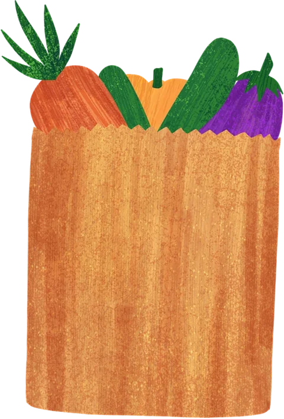

Beyond Hospitality
Φτιάξε τη Σαλάτα σου.
Πόσο βιώσιμη είναι η τέλεια σαλάτα σου;
Ιούλιος · Κύπρος
Διάλεξε τα υλικά που θα ήθελες πραγματικά να φας — όχι αυτά που «πρέπει».
5–12 υλικά: τουλάχιστον 1 βάση, 1 λαχανικό, 1 πρωτεΐνη και ακριβώς 1 ντρέσινγκ.
Στο τέλος θα δεις τι κόστισε η σαλάτα σου στο νησί — σε χιλιόμετρα, νερό και CO₂.